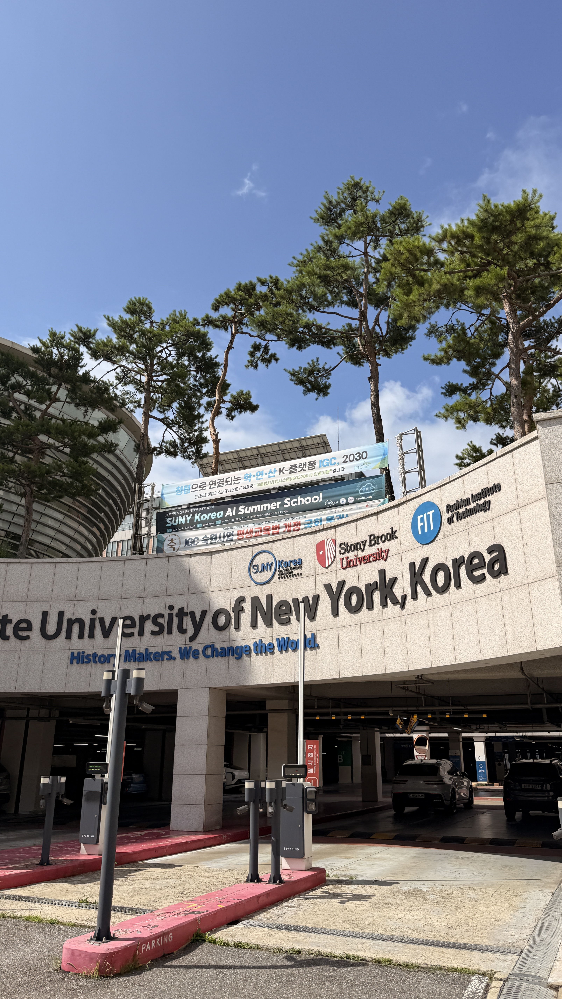
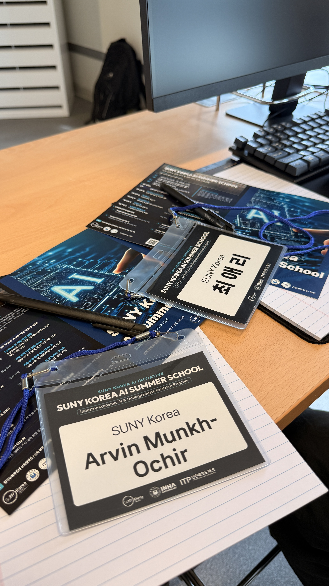
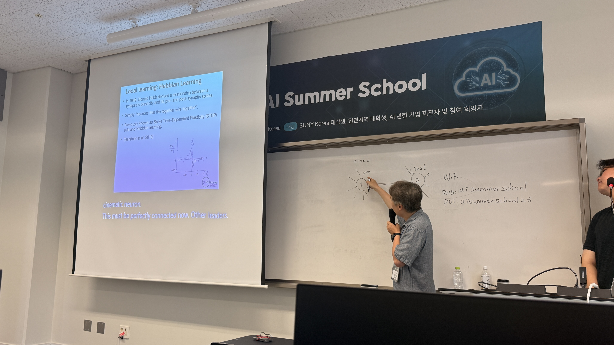
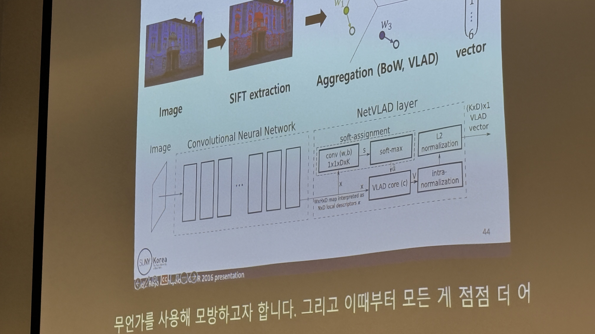
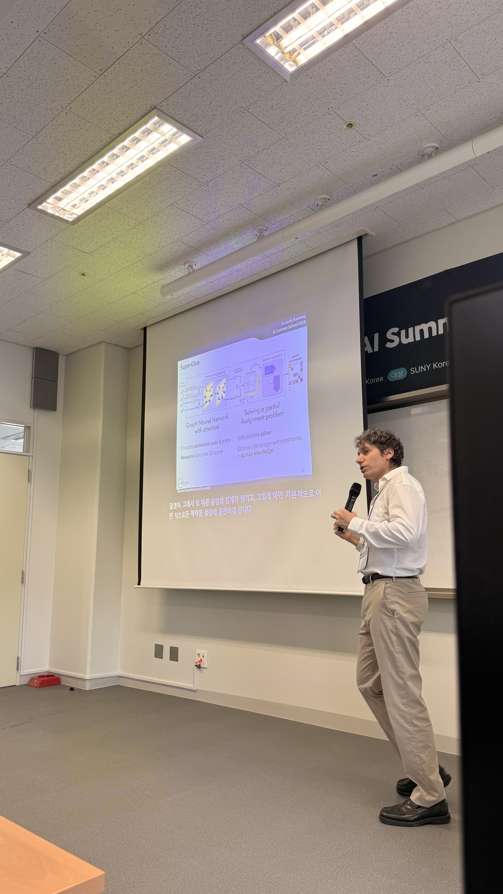

Five Days at the SUNY Korea AI Summer School

with Aeri

with Aeri

Running the models ourselves through carefully curated Google Colab notebooks — not just watching slides.

Training YOLO for crack detection, where training data, prediction, loss, and overfitting finally connected to a real task.

Thank you to the professors, TAs, industry speakers, and SUNY Korea for five days of learning and growth. ❤️

Thank you to the professors, TAs, industry speakers, and SUNY Korea for five days of learning and growth. ❤️

Thank you to the professors, TAs, industry speakers, and SUNY Korea for five days of learning and growth. ❤️
I had the opportunity to participate in this advanced five-day session, and I am truly amazed by how much experience our professors, TAs, and industry speakers were able to give us within such a short time.
The sessions covered a wide range of fields, from machine learning and deep learning to digital twins, YOLO-based crack detection, B2B services using the Gemini API, computer vision, visual localization, and neuromorphic AI. What I appreciated most was that these topics did not stay as lectures. Through carefully curated Google Colab notebooks, we could actually run models, experiment, and see how these concepts work in practice.
I personally focused more on LLM API calling, prompt engineering, and how they can be applied to real B2B services. Training YOLO also helped me connect concepts such as training data, prediction, loss, and overfitting with an actual computer vision application.
One small but meaningful moment was during Prof. François Rameau's lecture on computer vision and visual localization. I had probably looked through his slides around ten times before, but somehow, only during this session, the ideas finally went into my mind so smoothly. It felt good to see things I had been trying to understand finally start connecting.
More than learning individual technologies, these five days made advanced research feel much closer and more approachable to me. Instead of only seeing these topics in papers and slides, I got to experiment with them myself.
Thank you so much to the professors, TAs, industry speakers, and SUNY Korea for these five days of learning and growth. ❤️